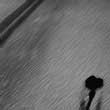

About
I’m Yi-Ting (Jenny) Chen. I study Visual Arts in University of Maryland, Baltimore County. I started doing photography back in 2008. It was when I first got introduced to photography when I took my first photography class ever. It’s a black and white film photography class, so I got my Nikon N80 from my cousin. I continued to take photographs ever since. In college, I started out concentrating on Photography, so I took many photography courses. Then I decided to learn Graphic Design in my junior year.
Resume:


Work
- Portraiture
- View Photos
- Abstract Land
- View Photos
- Film
- View Photos
- Other
- View Photos
Contact
- Contact Me
- Flickr
- Follow Me
- Tumblr
- Follow Me